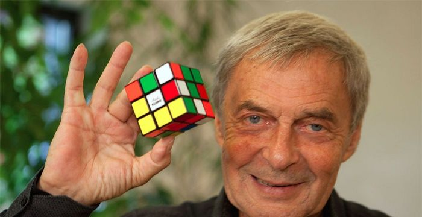

CANAL RAFAEL CINOTO
Resolva o cubo mágico com histórias, playlist do canal Rafael Cinoto, uma maneira divertida e intuitiva de aprender a montar um cubo mágico.

História, curiosidades e muito mais
O Cubo Mágico, pequeno objeto formado por nove quadrados coloridos em cada face, foi criado pelo húngaro Erno Rubik, na metade da década de 70. Porém, foi apenas em 1980 que o brinquedo - chamado originalmente de Cubo de Rubik - tornou-se famoso no resto do mundo, quando foi importado pelos Estados Unidos.
O recorde mundial para uma única resolução de um 3x3x3 é de 3.47 segundos, definido por Yushend Du da China no Wuhu Open 2018 disputado em 25 de novembro de 2018.
No vídeo é possível ver o momento em que ele resolve o cubo mágico e cria o novo recorde. A baixa qualidadde do vídeo é devido ao fato de ter sido gravado por uma câmera de segurança do local.
CFOP(Cruz, F2L, OLL e PLL) é um método de resolução proposto por vários cubistas em torno de 1981, conhecido também pelo nome de Método de Fridrich, pois foi popularizado por Jessica Fridrich. Em parte por conta da publicação do método no site de Fridrich em 1995, CFOP é o mais comum método avançado de resolução de 3x3x3.
Por ter popularizado o método, ela muitas vezes recebe o crédito por ter inventado o método. Na verdade, o método foi inventado um conjunto de cubistas no início de 1980, muitas vezes chegando em partes do método independentemente. Os proponentes originais são:
Fazendo uma breve pesquisa no youtube, é possível encontrar inúmeros vídeos ensinando a montar o tão temido cubo mágico, mas separamos aqui algumas playlists que julgamos mais interessantes.
Resolva o cubo mágico com histórias, playlist do canal Rafael Cinoto, uma maneira divertida e intuitiva de aprender a montar um cubo mágico.
Se você prefere aprender de uma maneira técnica, os movimentos e o que eles fazem, a playlist do canal do Renan Cerpe é o mais indicado para você.
O campeonato brasileiro de cubo mágico é um torneio realizado anualmente no Brasil, oficializado pela World Cube Association (WCA), no qual sua primeira edição foi realizada em 2013. Os resultados de todos os participantes, em todas as categorias, fazem parte dos rankings oficiais.
Temporada ou competição atual: 2019
Atual campeão: Vicenzo Guerino Cecchini
O processo de montar o cubo mágico estimula a região pré-frontal do cérebro, em especial a chamada função executiva, segundo Geraldo Possendoro, professor da especialização em medicina comportamental da Unifesp (Universidade Federal de São Paulo).